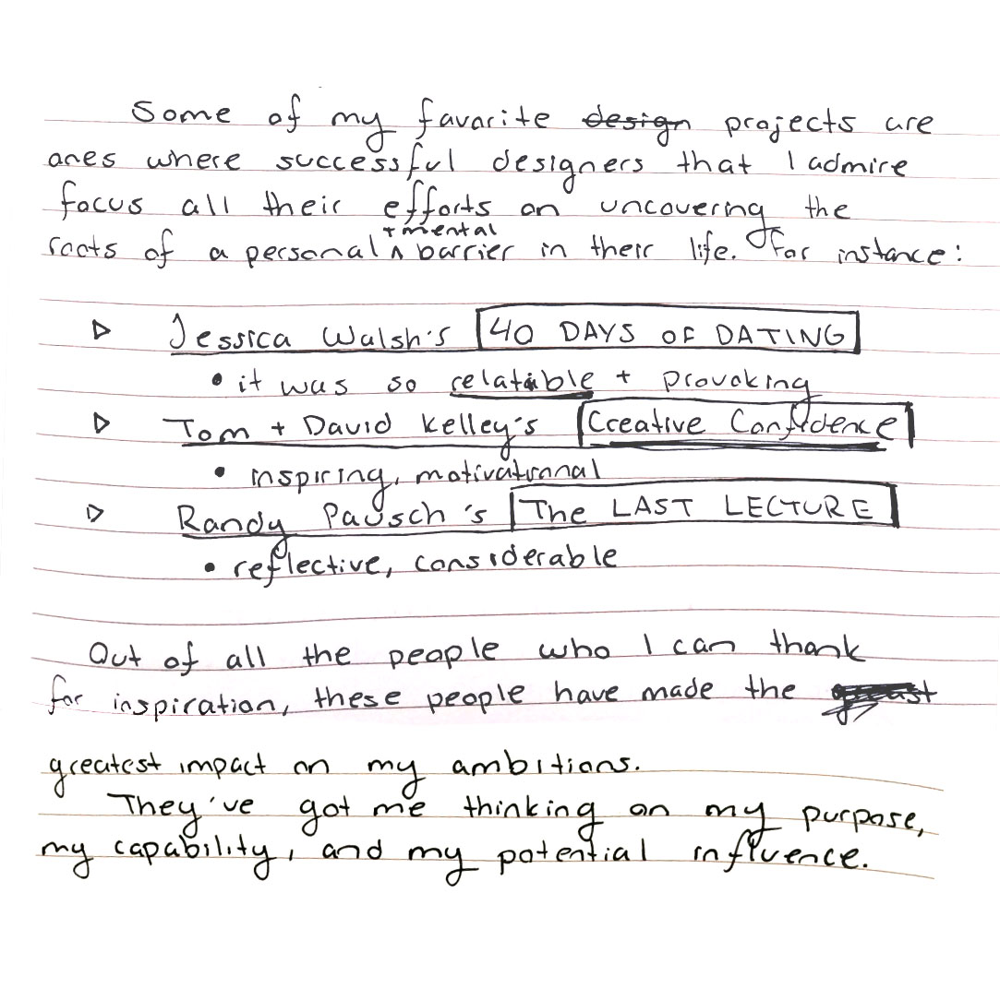

Preparation
PROGRESS REPORT 1
February 10th, 2015
I’ve spent the last few days reading the growing mound of books that I’ve been buying and checking out from the library that pertains to my topic of interest. The two books that have had my full attention are “Creative Confidence,” by Tom + David Kelley, and “Fail Better: Design Smart Mistakes and Succeed Sooner,” by Anjali Sastry + Kara Penn. I’ve been opening a lot of consideration and mind mapping on where I believe I’m heading with this study, and what my purpose is through it.
I’ve determined that my target audience are designers and creative folk who are struggling with finding confidence following a failure. My first step is to gather feedback and stories from others on my current area of study: fear as a barrier in the creative process. But, having sent out simple survey monkey quizzes before, I know that in order to provoke and gather the level of reflection that I’m looking for, I’ll need to get a little more creative with how I present the questions.
Because I also want this project to serve as a vessel to experiment with increasingly popular areas of design, I’m trying something that I’m definitely not ready for. Yesterday I started coding a website to host my questions, using a form submit to gather my stories. Sounds like a simple task for a web designer. But since I’ve barely touched JavaScript, and we’ve had 3 snow days already in place of my Advanced Web class with Pascal, the challenge is on. I might be wasting my efforts trying to learn a new skill instead of just using a simpler approach to collect my data, but I find learning this shit exciting so I’m going to keep trying for at least another day or two. With that, creating a website link makes my questions more accessible to people outside of the MassArt community, and I believe that the simple and clear design would encourage more people to take the time to submit a thoughtful story. So a single serving website vs. a static survey = catering to my audience of ambitious designers. I think.
When it comes to provoking thoughtful stories, though, I don’t want to limit myself to only asking design related questions, or even asking strictly graphic designers.
The questions that I’ve started asking people are:
Did you ever “play it safe” only to regret it later?
Who inspires you to act fearlessly?
What is one fear you feel committed to overcoming?
What’s an instant that you found yourself resilient in the face of judgement?
I’m also starting this tumblr blog as a repository for my process. This morning I started journaling my thoughts on where I’m going with this project, and I’m actually pretty happy with my progress, even if there’s nothing but thoughts to show for it so far.

(P.S. This is a filler paragraph) Because I also want this project to serve as a vessel to experiment with increasingly popular areas of design, I’m trying something that I’m definitely not ready for. Yesterday I started coding a website to host my questions, using a form submit to gather my stories. Sounds like a simple task for a web designer. But since I’ve barely touched JavaScript, and we’ve had 3 snow days already in place of my Advanced Web class with Pascal, the challenge is on. I might be wasting my efforts trying to learn a new skill instead of just using a simpler approach to collect my data, but I find learning this shit exciting so I’m going to keep trying for at least another day or two. With that, creating a website link makes my questions more accessible to people outside of the MassArt community, and I believe that the simple and clear design would encourage more people to take the time to submit a thoughtful story. So a single serving website vs. a static survey = catering to my audience of ambitious designers. I think.


© 2015 Beth Chappell
- Terms and Conditions
- Privacy Policy